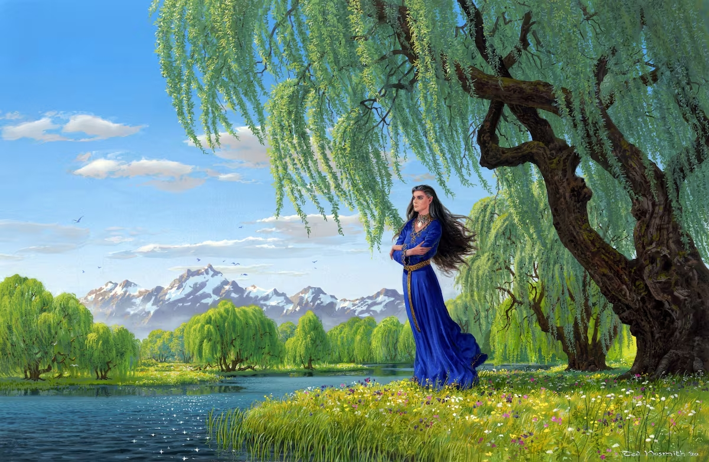

Ted Nasmith, el ilustrador que da forma al universo fantástico de Tolkien
Uno de los creadores más célebres de la obra del autor de El señor de los anillos reflexiona sobre la eternidad de la gran epopeya fantástica y sus vínculos con el arte clásico.

Paula Bonet en el umbral de su arte
La pintora inaugura 'La anguila. La carne como pintura y la pintura como espejo' en la Fundació Vila Casas.

La ilustradora Bea Lema gana el premio Nacional del Cómic
El jurado destaca la obra de: El Cuerpo de Cristo siendo “innovadora y arriesgada.